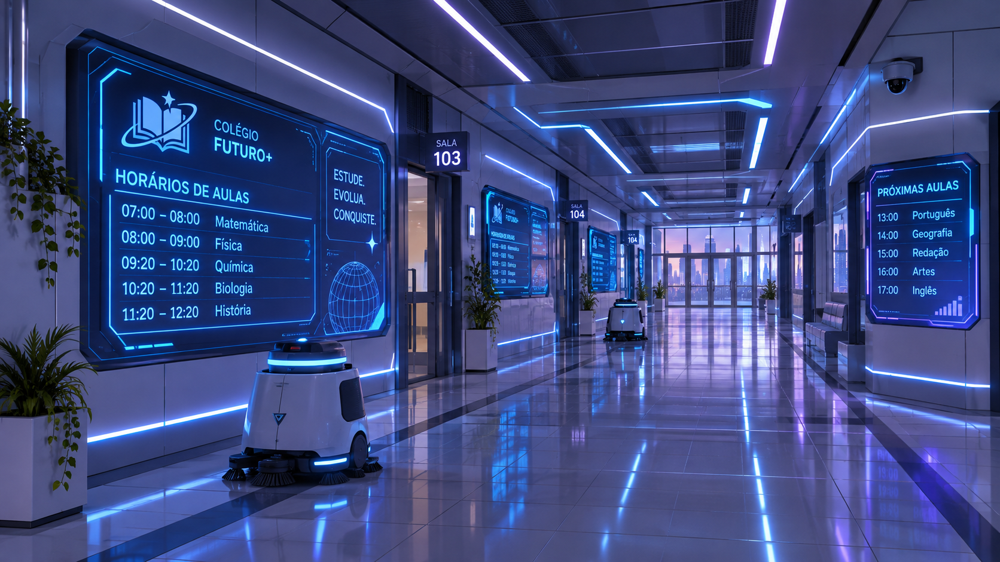

Era uma manhã comum. A escola estava cheia de alunos, conversas pelos corredores e professores correndo para chegar às salas. Tudo parecia seguir a mesma rotina de sempre.
Era uma manhã comum. A escola estava cheia de alunos, conversas pelos corredores e professores correndo para chegar às salas. Tudo parecia seguir a mesma rotina de sempre.
Iara caminhava pelo corredor, esperando o início da próxima aula, quando percebeu que precisava ir ao banheiro. Ela entrou e, por alguns segundos, tudo permaneceu normal.

De repente, uma luz estranha começou a surgir no fundo do banheiro.
Ela se aproximou, curiosa, e percebeu algo impossível: um portal brilhante havia aparecido diante dela. Sem saber o que estava acontecendo, ela observou aquela passagem misteriosa.
ENTRAR?
O novo lugar parecia como sua escola antiga, mas tinha algo diferente.
 Iara dá de ombros e vai em direção à saída do banheiro. Quando ela achava que tinha se livrado de uma situação anormal, o portal se abre logo abaixo de seus pés.
Iara dá de ombros e vai em direção à saída do banheiro. Quando ela achava que tinha se livrado de uma situação anormal, o portal se abre logo abaixo de seus pés.
Iara cai em queda livre para dentro do portal, seu corpo inteiro formiga e seu estômago começa a embrulhar.
 Quando se dá conta, a menina percebe que está no meio de um corredor escolar lotado de estudantes, os quais alguns a olham com cara de espanto e
outros correm para falar com ela.
Quando se dá conta, a menina percebe que está no meio de um corredor escolar lotado de estudantes, os quais alguns a olham com cara de espanto e
outros correm para falar com ela.

Enquanto andava procurando alguém para perguntar aonde estava, Iara percebe que robôs fazem a limpeza da escola e telas grudadas nas paredes mostram o horário de aulas..Iara avista um aluno em cima de um skate voador conversando com um robô vestido de professor e decide falar com o menino.
No Amazonas, a busca pela cidade perdida se intensifica. Você se depara com um rio bifurcado.
Caminhando por daquela escola futurística, Iara percebe robôs fazendo limpeza dos corredores, telas grudadas na parede mostrando os horários das aulas e uma sala chama sua atenção.
A porta estava com a porta aberta e, lá dentro, Iara viu algo que parecia um holograma.
ENTRAR?
Iara entra furtivamente no que parece ser uma aula de história, o holograma mostrava fatos históricos como se acontecessem ali naquele espaço. Iara nunca imaginou ver algo assim com os seus próprios olhos
Iara passa reto daquela sala com mais coisas estranhas dessa nova realidade. Ela (e) se pergunta o que teria acontecido se entrassse.
Alguns estudantes a fazem diversas perguntas, outros tentam ajudá-la, até que um professor se aproxima.
O professor diz que a escola estava lhe esperando, mas não daquele jeito
O professor diz que a escola estava buscando meios de realizar viagem no tempo para se comunicar com alguém no passado, mas o portal acabou abrindo em um local inesperado
ACOMPANHA-LO?